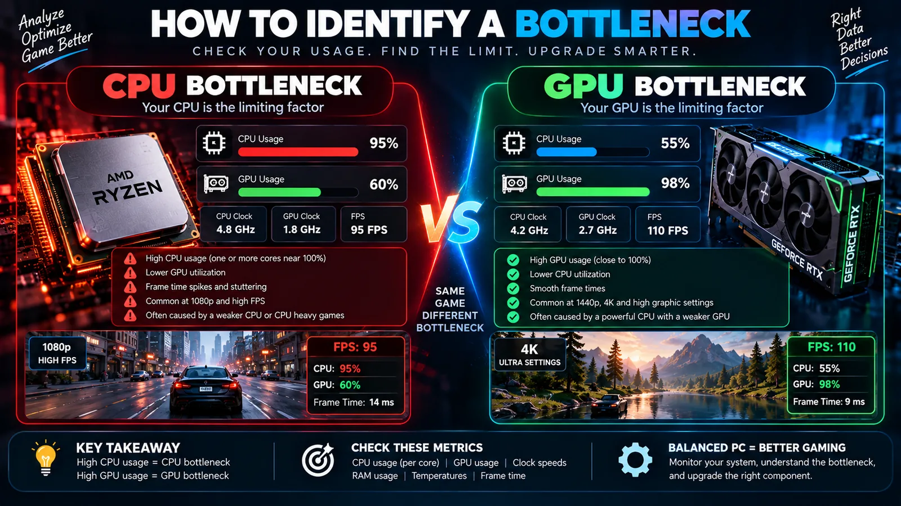
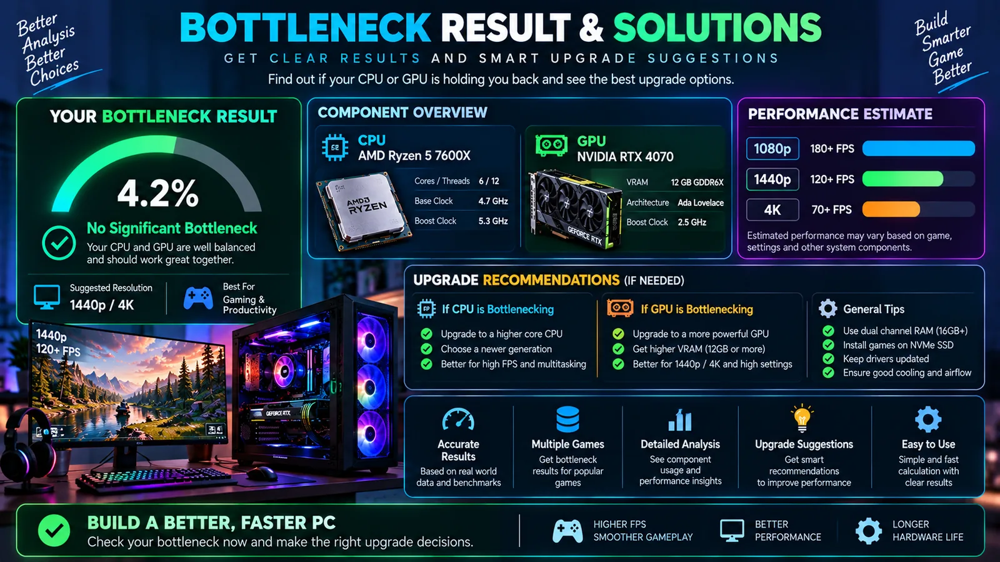

How to Check a PC Bottleneck: CPU, GPU, RAM and Temperatures
A step-by-step method for diagnosing PC bottlenecks using real usage data, frame time, resolution tests, memory checks and thermal monitoring.

What a bottleneck really is
A bottleneck is the resource that currently limits the speed of a workload. That resource can be the CPU, GPU, RAM, storage, network connection, thermal system or even a software limit. It can also change from one application to another.
For that reason, checking a PC bottleneck should start with the workload and the performance target. A computer that is GPU-limited at 4K can be CPU-limited at 1080p. The same machine can have no meaningful hardware limitation during ordinary web browsing.
Step 1: define the problem
Write down the game or application, resolution, graphics settings, monitor refresh rate and target performance. If the complaint is “my PC is slow,” describe what slow means: long application startup, low FPS, stuttering, delayed input, slow file operations or something else.
Step 2: monitor the CPU
Use Task Manager or a hardware monitoring application to watch CPU usage while reproducing the problem. Look beyond total utilization when gaming. A heavily loaded thread can become the limit even when the overall CPU percentage looks moderate.
Also check CPU clock speed and temperature. If frequency falls during sustained load, investigate cooling and power behavior before calling the processor too slow.
Step 3: monitor the GPU
GPU utilization, clock speed, temperature and VRAM usage provide useful clues. High GPU utilization with a stable clock and a frame rate below your target often points toward a graphics limit. Low GPU utilization during poor gaming performance calls for a wider investigation.
Step 4: check RAM
Look at used and available system memory while the workload is running. If RAM is nearly exhausted and the system begins paging heavily, adding memory may be more useful than upgrading the CPU or GPU.
Remember that memory usage is not binary. Windows will use available memory for caching, so high usage alone does not prove that RAM is insufficient.
Step 5: check temperatures and clocks
Thermal problems can imitate a weak component. Dust, poor case airflow, an incorrectly mounted cooler or a failed fan can cause a CPU or GPU to reduce its operating frequency.
Compare temperatures and clocks during a normal run and during the slowdown. If clocks fall at the same time performance drops, cooling or power management deserves attention.
Step 6: use the resolution test
For gaming, lower the resolution while keeping the rest of the settings as similar as possible. If FPS increases significantly, the GPU was likely an important part of the limit. If FPS changes very little, investigate CPU performance, frame caps, memory and the game engine.
Step 7: check frame time
FPS tells you how many frames are produced on average. Frame time shows how long individual frames take. Stuttering can be easier to understand from a frame-time graph because a few long frames may be hidden by a reasonable average FPS.
Step 8: remove artificial limits
Before diagnosing hardware, check for V-Sync, in-game FPS caps, driver-level limits and display settings. A GPU that stops at a chosen frame cap is not necessarily a weak GPU.
Step 9: test one change at a time
Changing five settings at once makes the result difficult to interpret. Instead, change resolution, texture quality, ray tracing, CPU-heavy settings or background processes individually and record the outcome.
Common bottleneck patterns
| Observation | What to investigate |
|---|---|
| GPU near full load and low FPS | GPU performance, resolution, graphics settings, VRAM, temperature and clocks |
| GPU underused and low FPS | CPU threads, frame cap, memory, drivers and background software |
| RAM almost exhausted with stutter | Memory capacity, background apps and paging |
| High temperature with falling clocks | Cooling, airflow, fan operation and power limits |
| High disk activity during slowdowns | Storage workload and the process generating I/O |
Why bottleneck percentages should be treated carefully
A single percentage cannot describe every PC workload. A calculator has to simplify many variables, while real games differ in engine design, patches, drivers and settings. Use a calculated estimate to compare possibilities, not as proof that one component will always be a certain percentage faster or slower.

When an upgrade is actually justified
Upgrade when measurements show that a component is consistently preventing you from reaching your target and the improvement is worth the cost. If the GPU is fully utilized and you want higher FPS, a stronger GPU may help. If the CPU is limiting a high-refresh workload, a CPU/platform upgrade may be more relevant. If memory is exhausted, add RAM. If temperatures are the problem, fix cooling first.
Test the PC under normal conditions
Do not run a diagnostic test with a dozen unrelated applications open unless that is how you normally use the computer. Close unnecessary programs, keep the same power plan and use the same game scene. If you want to test multitasking, make that a deliberate second test rather than mixing the two conditions.
Look for changes, not perfect numbers
There is no universal CPU, GPU or RAM percentage that defines a bottleneck. A 70% GPU load can be normal in one situation and evidence of a limitation in another. The strongest clue is how performance changes when you alter the workload. If reducing GPU work dramatically increases FPS, that tells you more than the percentage alone.
Check software before replacing hardware
Update drivers when appropriate, remove unnecessary startup applications, check game settings and make sure an FPS cap is not active. If the problem appeared immediately after a software update, compare behavior with a known-good configuration where possible. Hardware upgrades should be the last step after obvious software and thermal issues have been ruled out.
When the problem is not a bottleneck
Some slowdowns are caused by network latency, game-server issues, shader compilation, storage errors, corrupted files or application bugs. A PC can have powerful hardware and still deliver a poor experience because the problem is outside the CPU/GPU performance path. Good troubleshooting keeps these possibilities separate.
Conclusion
The best PC bottleneck check is a small investigation rather than a single number. Define the workload, monitor CPU and GPU behavior, check RAM and temperatures, use resolution and frame-time tests, and verify that no artificial frame limit is involved. This approach gives you evidence you can use for an upgrade instead of relying on a generic bottleneck label.